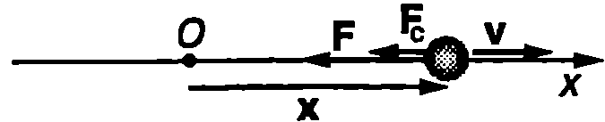
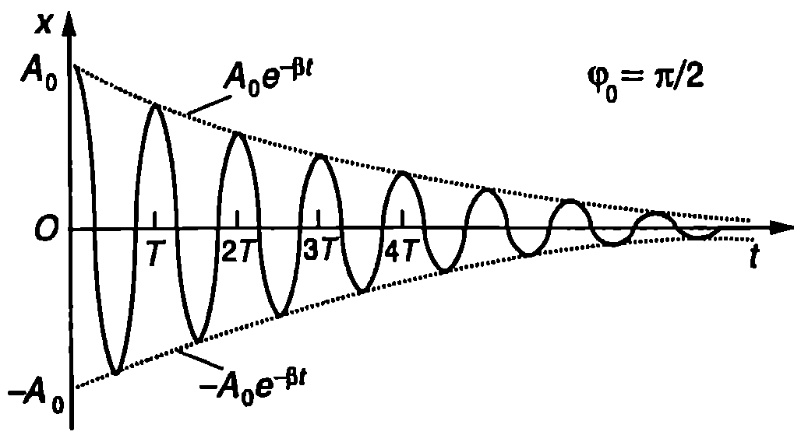
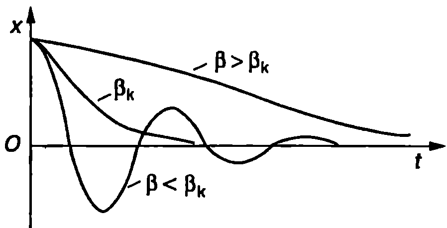
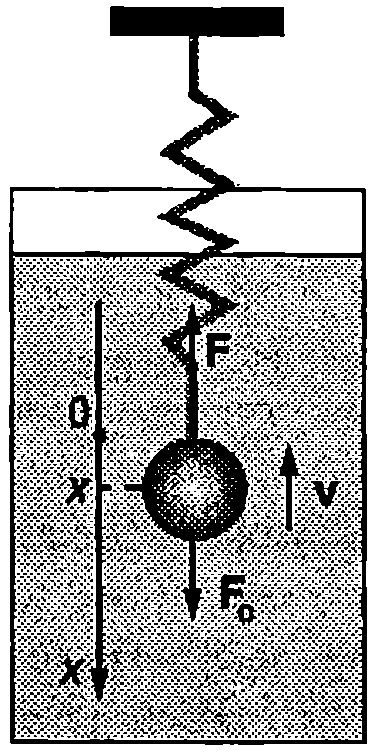

Собствени трептения
Трептенията на система, на която не действат външни сили, се наричат собствени (свободни) трептения. Собствените трептения се извършват под действие на вътрешна сила, породена от взаимодействието на отделни части от системата (например тяло пружина при пружинното махало). Кръговата честота на собствените трептения (собствена кръгова честота) зависи единствено от характеристиките на системата (например от масата на теглилката и от коефициента на еластичност на пружината при пружинното махало, или от земното ускорение и дължината на нишката при математичното махало и т.н.). За да се възбудят собствени трептения, механичната система трябва да се изведе от равновесие чрез еднократно внасяне на енергия отвън. Ако при движението не възникват сили на триене и съпротивление, внесената енергия се запазва. Консервативните връщащи сили само преобразуват тази енергия от кинетична енергия в потенциална енергия и обратно. Амплитудата на трептене е постоянна и такива трептения биха продължили неограничено дълго наричат се незатихващи трептения.
Във всяка реална трептяща система обаче действат дисипативни сили на триене и съпротивление, които извършват отрицателна работа и механичната енергия на трептящата система, както и амплитудата на трептене, непрекъснато намаляват. Такива трептения се наричат затихващи трептения.
Характеристики на затихващите трептения
Най-голям интерес представлява случаят, когато силата на съпротивление е правопропорционална на скоростта. Да разгледаме отново частица с маса $m$, която може да се движи само по оста $x$. Началото $O$ на оста съвпада с равновесното положение на частицата. Освен връщащата сила $F = -kx$, на частицата действа и сила на съпротивление $\displaystyle F_c = -b v = -b \frac{dx}{dt}$, където $b$ е положителна константа. Знакът минус показва, че силата на съпротивление е насочена обратно на посоката на скоростта $\vec v$ (Фиг. \ref{fig:73.1}). Уравнението на движението на частицата получава вида

`Фиг. 73.1`
$$\begin{aligned} &m\frac{d^2x}{dt^2} = -kx -b\frac{dx}{dt}\ &\text{или}\ &\frac{d^2x}{dt^2} + 2\beta\frac{dx}{dt}+\omega_0^2x=0, \end{aligned} $$ където $\displaystyle \omega_0 = \sqrt{\frac{k}{m}}$ е собствената кръгова честота, а константа $\beta = b/2 m$ се нарича коефициент на затихване.
Уравнение \eqref{eq:73.1} е еднородно линейно диференциално уравнение от втори ред с постоянни коефициенти. Неговото решение е (вж. стр.287) $$x = A_0 e^{-\beta t}\sin(\omega t + \varphi_0), $$ където $$\omega = \sqrt{\omega_0^2 - \beta^2}. $$ Константите $A_0$ и $\varphi_0$ се наричат съответно начална амплитуда и начална фаза. Техните стойности се определят от началните условия, т.е. от стойностите на отклонението и скоростта на частицата в момента $t = 0$. Функцията $x(t)$ е представена графично на Фиг. \ref{fig:73.2}.

`Фиг. 73.2`
Движение, което се извършва по закона \eqref{eq:73.2}, се нарича затихващо трептене. Затихващите трептения, строго погледнато, не са периодични движения. При тях не е изпълнено основното изискване за периодично движение: стойностите на всички величини, които го характеризират, да се повтарят през равни интервали от време. Например отклонението $x$ при затихващото трептене на частицата, показано на Фиг. \ref{fig:73.2}, никога не достига отново своята начална стойност $A_0$ Независимо от това, величините, характеризиращи затихващото трептене (отклонение, скорост, ускорение), през равни интервали от време стават нула или достигат максимални (минимални) стойности. Затова затихващите трептения се описват със същите величини, както периодичните незатихващи хармонични трептения. Величината, която се изразява с формула \eqref{eq:73.3}, се нарича кръгова честота на затихващите трептения. Техният период е $$T = \frac{2\pi}{\omega} = \frac{2\pi}{\sqrt{\omega_0^2 - \beta^2}}. $$ Амплитудата $A$ на затихващите трептения намалява по експоненциален закон с течение на времето: $$A = A_0 e^{-\beta t}. $$ От формула \eqref{eq:73.3} се вижда, че кръговата честота $\omega$ на затихващите трептения е по-малка от собствената честота $\omega_0$. Следователно при наличие на сили на триене и съпротивление честотата на трептенията намалява и става равна на нула при $\beta = \beta_k = \omega_0$ При големи стойности на коенфициента на затихване ($\beta > \beta_k$) в система та изобщо не възникват тя се връща в равновесното си положение чрез апериодично движение. Коефициентът на

`Фиг. 73.3`
затихване $\beta_k = \omega_0$, при който затихващото трептене преминава в апериодично движение (при $\beta > \beta_k$) се нарича критичен коефициент на затихване. Доказва се, че движението се прекратява най-бързо и системата се връща в равновесното си положение при критичен коефициент на затихване (Фиг. \ref{fig:73.3}).
В редица случаи трептенията са нежелателни, поради което се вземат мерки за тяхното бързо затихване. Например амортисьорите на автомобилите се конструират така, че да се постигне критичен коефициент на затихване. Стрелките на измервателните уреди (волтметри, амперметри, везни и др.) имат коефициент на затихване, който е равен или е малко по-малък от критичния. Ако затихването в слабо ($\beta \ll \beta_k$) стрелката на уреда извършва голям брой трептения преди да се установи в равновесното си положение, което съществено увеличава времето за измерване.
Пример 73.1
Пружинно махало е направено от топче с маса $m = 15$ g и радиус $r = 8,!4$ mm и от пружина с коефициент на еластичност $k = 5$ N/m. Топчето е потопено в глицерин (Фиг. \ref{fig:73.4}) и извършва затихващи трептения с кръгова честота $\omega = \alpha\omega_0$, където $\omega_0$ е собствената кръгова честота на махалото. Стойността на коефициента $\alpha$ се определя експериментално. Определете вискозитета $\eta$ на глицерина, ако $\alpha = 0,!90$. Силата на съпротивление се описва от закона на Стокс (вж. част 1, стр.148) $F_c = -b v = -6\pi\eta rv$, където $v$ е скоростта на топчето. \end{psexample}

`Фиг. 73.4`
Решение
Коефициентът на затихване на махалото е $$\beta = \frac{b}{2m} = \frac{6\pi\eta r}{2m}.$$ Заместваме $\beta$ и $\omega$ във формула \eqref{eq:73.3} за кръговата честота затихващите трептения $$\alpha\omega_0 = \sqrt{\omega_0^2 - \left(\frac{3\pi\eta r}m\right)^2} ,$$ вдигаме на квадрат двете страни на това равенство, заместваме $\omega_0^2 = k/m$ и определяме вискозитета на глицерина $$\eta=\frac{\sqrt{(1-\alpha^2)km}}{3\pi r} = 1,!5~\mathrm{Pa\cdot s}.$$
Доброкачественост
За количествена характеристика на бързината, с която трептящата система губи енергия в резултат на действието на сили на триене и съпротивление, се използва величината доброкачественост $Q$ ($Q$-фактор). По определение $$Q = 2\pi \frac{\text{енергия на трептящата система}}{\text{енергия, която се губи за един период}},$$ или $$Q = 2\pi \frac{E(t)}{E(t) - E(t + T)}, $$ където $E(t)$ е енергията на трептящата система в момента $t$, а $E(t + T)$ - след един период. Тъй като енергията е правопропорционална на квадрата на амплитудата на трептене, уравнение \eqref{eq:73.6} може да се запише във вида $$Q = 2\pi \frac{A^2 (t)}{A^2 (t) - A^2 (t + T)}. $$ Заместваме амплитудата А от уравнение \eqref{eq:73.5} в \eqref{eq:73.7} и получаваме $$Q = \frac{2\pi}{1 - e^{2\beta T}}. $$ Когато затихването е слабо ($\beta\ll\omega_0$), кръговата честота на затихващите трептения е приблизително равна на собствената кръгова честота: $\omega \approx \omega_0$ (вж. уравнение 73.3). Тогава $$T\approx\frac{2\pi}{\omega_0};\ 2\beta T\approx\frac{4\pi\beta}{\omega_0} \ll1.$$ Използваме приближението (вж. част 1, (А.53) и (А.57) на стр.234) $$1 - e^{-2\beta T} \approx 2\beta T \approx \frac{4\pi\beta}{\omega_0}$$ и определяме доброкачествеността на трептяща система с малък коефициент на затихване $$Q = \frac{\omega_0}{2\beta}. $$ Колкото по-малък е коефициентът на затихване $\beta$, толкова по-малки са загубите в трептящата система и е по-голяма нейната доброкачественост.
Пример 73.2
Трептяща система има доброкачественост $Q = 100$. Колко трептения $N$ ще извърши системата, докато амплитудата им намалее $e = 2,!718$ пъти? \end{psexample}
Решение
Системата има голяма доброкачественост, поради което можем да използваме формула \eqref{eq:73.9} за слабо затихващи трептения. Амплитудата на трептене намалява по закона $A = A_0 e^{-\beta t}$. За време $t= NT$, където $T$ е периодът на трептене, амплитудата намалява $e$ пъти: $$A=\frac{A_0}{e}= A_0e^{-\beta NT},$$ откъдето получаваме, че $\beta NT = 1$. За слабо затихващи трептения заместваме $T = 2\pi/\omega_0$ и определяме $N$: $$N= \frac{\omega_0}{2\pi\beta} = \frac{Q}{\pi}.$$
Следователно доброкачествеността е равна на произведението от числото $\pi$ и броя на трептенията $N$, които системата извършва, докато амплитудата им намалее е пъти: $Q = N\pi$.
Задачи
-
За време $t_1 = 10$ s амплитудата на пружинно махало, което извършва затихващи трептения, намалява 2 пъти. Определете коефициента на затихване $\beta$.
-
За време $t_1 = 10$ s амплитудата на пружинно махало, което извършва затихващи трептения, намалява 2 пъти. За колко секунди след началото на трептенията тяхната амплитуда ще намалее 8 пъти?
-
Определете $Q$-фактора на трептяща система, ако след всеки $N = 100$ трептения амплитудата на трептенията намалява $k = 2$ пъти.
-
Определете 0-фактора на математично махало с дължина $L = 1$ m, ако за интервал от време $\tau = 100$ в механичната енергия на махалото намалява $k = 2$ пъти.